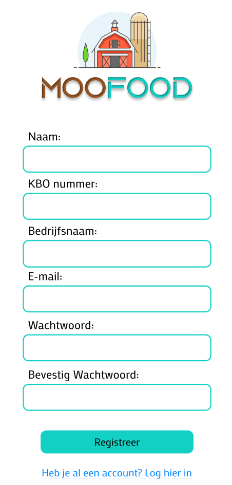
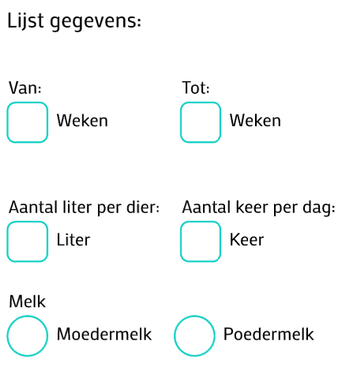
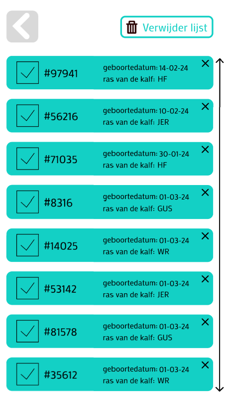

Wij hebben een app gemaakt om gemakkelijk een overzicht
te houden van al uw kalveren en zo makkelijk te kunnen
zien hoeveel melk u ze moet voederen.
Account
Maak gemakkelijk een account aan per
boerderij aan de hand van uw KBO nummer. Zo
kunnen er meerdere mensen op het account van
uw bedrijf zonder gevoelige informatie zoals
uw itsme te moeten delen.

Voeder schema
Beslis zelf hoeveel keer uw kalveren
gevoederd moeten worden op basis van
leeftijd. Zo kunt u alles peronaliseren en
toch nog gemakkelijk bijhouden hoeveel liter
melk u elke dag hoeft te maken

Kalveren
Voeg uw kalveren simpel toe en hou ze
gemakkelijk per leeftijdsgroep bij. Voer de
geboortedatum en het oornummer in en de rest
doen wij. Wij houden bij in welke groep uw
kalveren zitten en wij geven u een
notificatie als er een kalf van hok moet
veranderd worden

Home
Krijg een overzicht van hoeveel melk u moet
maken voor de ochtend en de avond als u de
app opent. Zie ook onmiddelijk welke groepen
gevoederd moeten worden op dat moment. Krijg
ook onmiddlijk de optie om te zien hoeveel
melk u andere dagen moet maken door onze
kalender functie. Zo houdt u gemakkelijk bij
hoeveel melk u vorige week hebt moeten maken
wij zijn vier studenten op de co-hogeschool Odisee. Wij
hebben als opdracht gekregen om de boeren te proberen
helpen met hun administratieve last doormiddel van een
app. Door in gesprek te gaan met verschillende boeren
zijn wij op het idee gekomen om boeren te helpen met het
bijhouden van de hoeveelheid melk ze moeten maken. Na
veel herwerken zijn we uiteindelijk met deze app
geëindigd. En we zijn nog steeds niet klaar! We blijven
werken aan nieuwe features die we eraan toe kunnen
voegen.